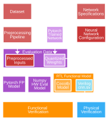
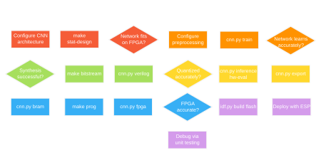

Chapter 6: Hardware-Software Co-Design
At every stage of training, it is critical that data is formatted identically to its hardware equivalent. From dataset preprocessing to FPGA synthesis great care must be taken to prevent any divergence in representation. The co-design environment, depicted in Figure 6.1, achieves this by establishing a central consistent neural network configuration as a single source of truth.
Data Flow and Centralization
After training concludes, quantized weights are exported to a csv, and then translated to hardware according to each layer's architecture. Combinational layers require all weights to be loaded simultaneously, so they are saved as a packed array within a verilog header (.vh) file along with each layer's biases and shifts. Sequential DSP layers only need one weight per DSP per cycle, so these weights are exported to hex files to initialize each ROM. This ensures that the Python training loop, the hardware emulator, and the Verilog parameters all inherit a mathematically consistent neural architecture.

After PyTorch training concludes, the network outputs the golden Quantized Weights which are then exported and translated according to each layer's hardware architecture. Combinational layers require all weights to be loaded simultaneously, so they are saved as a packed array within a Verilog header (.vh) file, alongside each layer's biases and learned right-shifts. Conversely, sequential DSP layers only require one weight per DSP per cycle, so these weights are exported to .hex files to physically initialize the FPGA ROMs.
To guarantee model equivalency, these quantized weights along with preprocessed inputs are simultaneously sourced by three distinct verification engines. First, the RTL Functional Model utilizes Cocotb integration tests wrapped around the instantiated Verilog to confirm that the hardware behaves as expected and produces the correct cycle-accurate decisions at the final output.
Next, to provide an additional layer of verification at scale, the evaluation data is read back into a custom, bit-accurate software emulator (hw_eval). Rather than relying on the floating-point PyTorch graph, this emulator executes pure integer matrix mathematics in NumPy, complete with explicit hardware bit-shifts and simulated accumulator overflows. While the Cocotb integration tests are essential for verifying cycle-accurate RTL behavior, the simulation is inherently slow. The hw_eval emulator bridges this gap by rapidly evaluating the entire dataset through the exact mathematical constraints of the datapath, efficiently predicting the model's true accuracy on the FPGA prior to physical synthesis.
By evaluating the dataset identically across all environments, any divergence between the theoretical PyTorch accuracy and the final hardware implementation can be quickly identified. Though hw_eval produces a hardware-accurate prediction, it does not mathematically guarantee the exact same accuracy as the software network. While in some cases the hardware accuracy is slightly greater by chance, profiling across 822 architectures reveals an average accuracy drop of -3.71% with a standard deviation of 10.76%. This variance is primarily driven by outlier networks that suffer catastrophic quantization collapse, likely due to extreme accumulator clipping or integer rounding errors that PyTorch's Straight-Through Estimators (STEs) couldn't perfectly model during training. In this case it is recommended to simply retrain the network, yielding a high likelihood of favorable quantization.
Design and Environment Flow
When prototyping the initial CNN, the lengthy design process was generalized for repeatability. Network selection, training, quantization, synthesis, programming, and deploying each introduce bottlenecks which must be evaluated properly as seen in Figure 6.2.

After specifying the desired network architecture (NNConfig), designers can execute a pre-flight synthesis check (make stat-design) which uses Yosys to rapidly estimate the hardware footprint. A primary challenge when targeting a resource-constrained FPGA (such as the 5280-LC iCE40) is the immense time investment required for end-to-end architectural design, PyTorch training, quantization, and final Verilog synthesis. Often, after hours of training, the final model would fail to physically fit on the device, and worse, fail to report any meaningful bottleneck metrics. This friction motivated the automated design space exploration discussed in the next section.
To bypass this bottleneck, stat-design performs a preliminary estimation by synthesizing each layer in isolation, allowing it to report the aggregate Logic Cell (LC) utilization even if the total design massively exceeds the physical hardware cap. Because this rapid approach operates before training has even begun, it lacks real learned weights, which are impossible to predict. To compensate, the script automatically injects a pseudo-random, non-zero bit pattern into the weights; this prevents the logic synthesizer from aggressively optimizing away the LUT-based multipliers due to constant-propagation. While this generates a highly accurate footprint for the isolated macros, it intrinsically ignores top-level routing and control overhead. Consequently, the resulting LC cost serves as a critical ballpark estimate, allowing designers to iteratively scale their architecture before ever committing to the lengthy PyTorch training pipeline. The greatest parameters designers can tweak here are the allocation of DSPs between layers, as well as the activation bit widths. Assigning a single DSP to deeper layers results in the least complex design possible, while activation bit widths in earlier layers can be reduced to two or three without any meaningful drop in accuracy.
After the design is settled, designers specify preprocessing and the hyperparameters involved with training the network. Task-specific macros such as input dimensions, input bit width, and number of classes are specified within the design itself. If the design does not achieve the desired accuracy, designers should prioritize increasing channel count, designing with lower initial precision and maximizing bandwidth (activation bitwidth x out channels) in the penultimate layer and classifier.
Once the desired accuracy is achieved the learned weights can be exported using cnn.py export and quantized accuracy can be tested using cnn.py inference hw-eval. This aforementioned model allows designers to simulate how the model mathematically operates in hardware with perfect bit-accuracy. If there's a sharp drop, it's recommended to retrain and requantize.
When the quantized accuracy is within 4% of the floating point accuracy, it is recommended that designers proceed to synthesis. Cnn.py verilog references the same design file to arrange and wire the equivalent macros in cnn.sv, as well as import the required weights and parameters learned during training. This program also updates the input dimensions in the top-level and properly updates the names and amount of hex files to be imported at each layer. Running “make bitstream ESP=0” targets the iCEBreaker V1.1a for use with USB serial IO for physical verification. If synthesis does not succeed, thanks to stat-design the actual LC should still be low enough to provide a meaningful error message.
Once successfully synthesized, designers can confirm that the hex files were correctly interpreted as ROMs by using cnn.py bram which parses the synthesis logs for matching values. After programming the FPGA, the accuracy can be physically verified using cnn.py fpga, driving the FPGA using UART over the USB Serial IO rather than from the ESP. This allows us to inject preprocessed images from the dataset and directly compare the result to hw-eval.
Finally when hardware accuracy has been verified, designers can finally run “make bitstream ESP=1” to enable the top-level to read IO over the GPIO pins from the ESP32c3. All that's before deploying is updating the image capture dimensions in the firmware, and updating the web server to properly interpret the received ID.